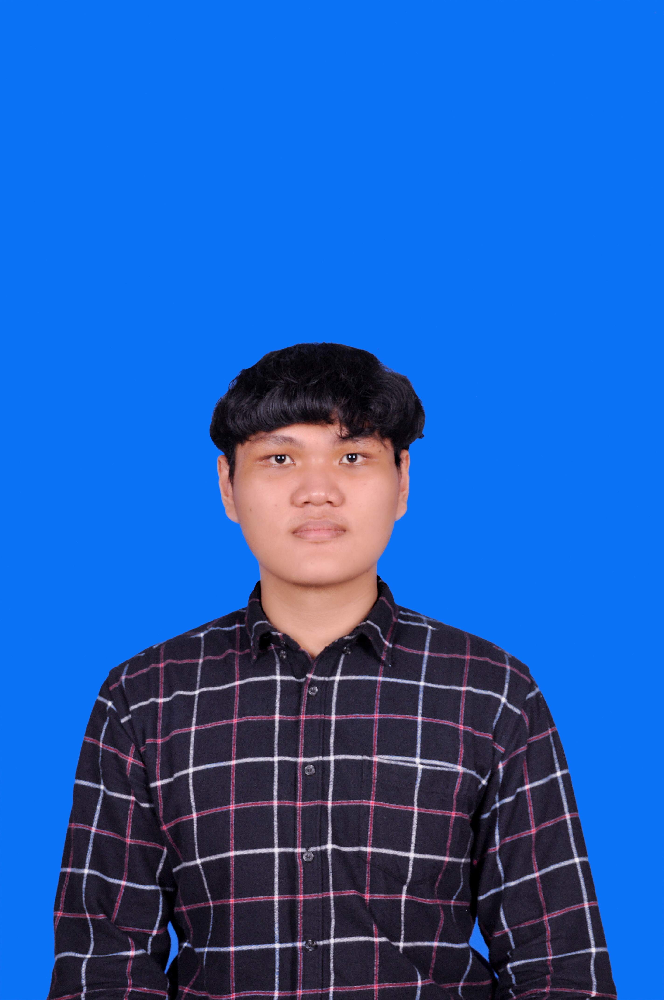

Welcome To My Domain!
Constantio Ariano Isworo, a student currently pursuing education at Sam Ratulangi University in the field of Informatics Engineering, enrolled in the class of 2022.

My Skills
- Frontend UI/UX
- Junior Entrepreneur
My Job Experience
My work experience involves part-time employment at a ramen restaurant, where I have contributed for over two years. In this capacity, I have acquired proficiency in providing excellent customer service and mastering the preparation of food and beverages in accordance with established standards.